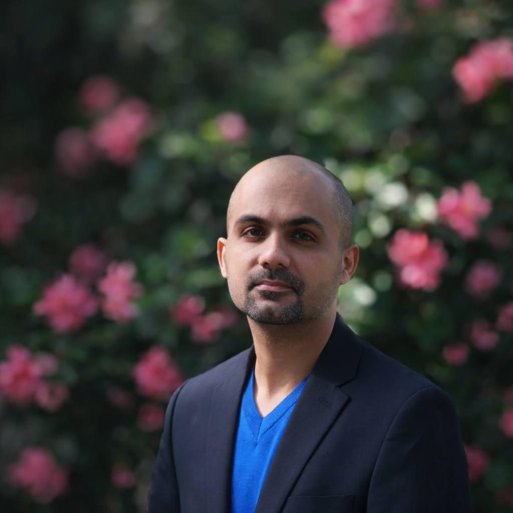

Email: usman.naeem@tufts.edu
X: @usmann1504
I am a PhD candidate in Economics and Public Policy at Tufts University and a Fellow in the Department of Economics at Harvard University.
My research lies at the intersection of development, environmental, and behavioural economics. I study how behavioural frictions, incentives, and policy design shape electricity markets, emissions, and household welfare in low-income countries, using field experiments and administrative data, with a focus on Pakistan.
I work closely with government and private-sector partners to design and test policy solutions in the field. Previously, I was a Country Economist at the International Growth Centre.